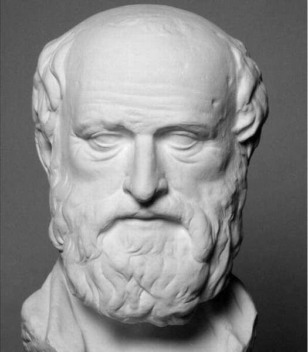

Ератосфен

(276 р. до н.е. - 192 або 194 р. до н.е.)
Ератосфен - це давньогрецький математик, поет і астроном , який відомий як батько географії . Ератосфен був першою людиною , щоб використовувати слово «географія» та інші географічні терміни , які все ще використовуються сьогодні, і його зусилля , щоб обчислити окружність Землі і відстань від Землі до Сонця проклали шлях для нашого сучасного розуміння космос. Серед інших його численних досягнень було створення першої карти світу і винаходи алгоритму , відомого як решето Ератосфена, який використовується для ідентифікації простих чисел.
Ератосфен народився близько 276 р до н.е. в грецькій колонії Кирена, на території , розташованої в сучасній Лівії. Він здобув освіту в академіях Афін і в 245 році до н.е., після отримання увагу на його навички, він був запрошений фараона Птолемея III , щоб запустити Велику бібліотеку в Олександрії в Єгипті. Це була головна можливість, і Ератосфен був збуджений , щоб прийняти позицію.
На додаток до того, математик і географ Ератосфен був також дуже талановитий філософ, поет, астроном і теоретик музики. Він зробив кілька значний внесок в науку, в тому числі відкриття, що в рік становить трохи більше, ніж 365 днів, що вимагає додатковий день або високосний день додається в календар кожні чотири роки, щоб тримати його послідовним.
Найвідоміший внесок Ератосфена в науку був його розрахунок кола Землі, яку він закінчив, працюючи над другим томом своєї “Географії”.
Почувши про глибокому колодязі в Сієні (недалеко від тропіка Рака і сучасного Асуана), де сонячне світло тільки вдарив дно колодязя на день літнього сонцестояння, Ератосфен розробив метод, за допомогою якого він міг би обчислити окружність Землі, використовуючи основи геометрії. Знаючи, що Земля була сферою, йому потрібно було тільки два критичних вимірів для обчислення довжини кола. Ератосфен вже знав приблизну відстань між Сієною і Alexandria, як виміряно верблюжими харчуванням торгових караванами. Потім він виміряв кут тіні в Олександрії сонцестояння. Беручи кут тіні (7,2 градуса) і розділивши її на 360 градусів окружності (360, поділеній на 7,2 виходів 50), Ератосфен може потім помножити відстань між Олександрією і Сієною по результату, щоб визначити коло Землі ,
Примітно, що Ератосфен визначив довжину окружності до 25000 миль, всього 99 миль над фактичною окружністю на екваторі (24,901 миль). Незважаючи на те, Ератосфен зробив кілька математичних помилок в своїх розрахунках, скасував один друг і дав дивно точну відповідь, який до цих пір викликає вчені подивуватися.
Кілька десятиліть потому, грецький географ Посидоний наполягав , що окружність Ератосфена була занадто великою. Він вирахував окружність на своєму і отримав цифру в 18000 миль-близько 7000 миль занадто коротких. У середні століття більшість вчених взяли окружність, хоча Ератосфен Христофор Колумб використав Посидонія вимір , щоб переконати своїх прихильників , що він міг швидко дістатися до Азії, пливучи на захід від Європи. Як ми тепер знаємо, це була критична помилка на частини Колумба. Якщо б він використовував фігуру Ератосфена замість цього, Колумб знав би він ще не був в Азії , коли він приземлився в Новому Світі.